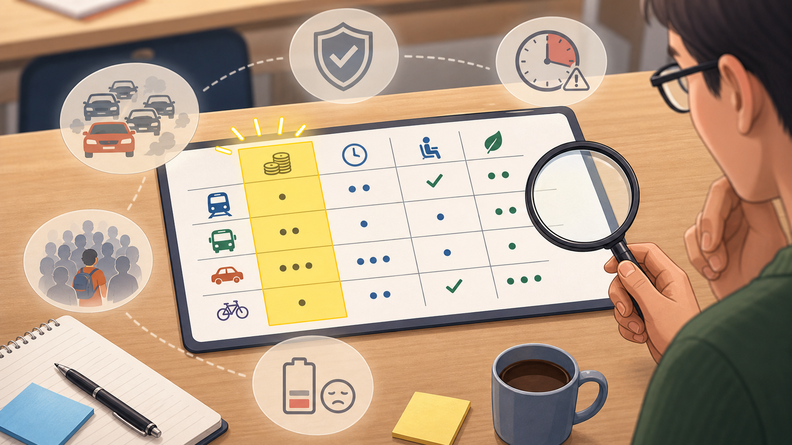

6 Lesson 4: Decision Matrix Workshop
Duration: 2 hours
You are in: Lesson 4
Before this: Lesson 3
After this: Lesson 5
Workbook page: Student Workbook -> Lesson 4 - Revised Prompt and Decision Matrix
6.1 Start Here
In Lesson 3 and the My Dream Decision homework, you wrote a prompt, a simple matrix, and a final decision reason. Today you will use that work to create or improve a draft decision matrix. You will revise your prompt, ask AI or a partner for review, and decide which suggestions to accept or reject.
The final decision stays with you.
6.2 Why This Matters
Good decision-making is not one step. You draft, check, revise, and explain. AI can suggest criteria or risks, but you must ask good questions, check assumptions, and decide what fits your real situation.
Some exercises in the website version are interactive. You can type your answers directly on the page, and you can copy or download a backup if your teacher asks.
The main task is to write in the book, not to create separate files.
6.3 Warm-up Activity: First Answer vs. Checked Answer
6.4 Today You Will
By the end of this lesson, you will:
- Revise a prompt using the ZONI CLEAR scaffold.
- Investigate Maria’s commute case by checking a first decision matrix.
- Ask AI, a partner, or a sample output for review without letting AI decide.
- Accept or reject suggestions in English.
- Complete the matching Student Workbook page.
Theme: Better decisions come from review, evidence, and human judgment.
AI Focus: CLEAR prompt revision and AI review without AI decision-making.
ESL Focus: Revision language, reasons, accept/reject language, and comparison.
Content Objective: Students will investigate Maria’s commute case, then revise one CLEAR prompt and their own matrix.
Language Objective: Students will use simple English:
I improved it by...
One criterion I should check is...
One useful suggestion was...
I will not use this because...
Before I decide, I need to check...6.5 Core Idea
A revision is an improved version. You can revise a prompt by adding context, limits, output format, or a review instruction.
Revision is not only fixing grammar. Revision can also help you notice missing information, question a score, and explain why your thinking changed.
An AI answer is not automatically correct. You can accept helpful suggestions, reject weak suggestions, change scores or criteria, and write your reason in English.
6.6 Key Vocabulary
Key Vocabulary Match
Choose the word that matches each meaning and example sentence.
Not saved yet
6.7 Sentence Frames
My original prompt was __________.
I improved it by adding __________.
My prediction is __________.
One criterion I should check is __________.
One score I should recheck is __________ because __________.
One useful suggestion was __________.
I will use this suggestion because __________.
I will not use this suggestion because __________.
Before I decide, I need to verify __________.
AI can suggest, but I decide __________.6.8 Lesson Agenda
| Time | Activity | Purpose |
|---|---|---|
| 10 min | Warm-up: First Answer vs. Checked Answer | Practice pausing, rereading, and checking before answering. |
| 20 min | Guided case: Maria’s Commute Mystery | Investigate a fast choice before seeing the class revision. |
| 25 min | Guided practice: review the commute matrix and prompt | Notice missing criteria, assumptions, risks, and scores. |
| 25 min | Guided practice: review a sample matrix | Identify useful and weak suggestions. |
| 25 min | Independent workshop: revise prompt and matrix | Complete the workbook evidence. |
| 15 min | Pair speaking and exit ticket | Explain accepted and rejected suggestions. |
6.9 Guided Practice
6.9.1 Maria’s Commute Mystery
In Lesson 3, Maria saw that the highest salary was not automatically the best job. But Maria made her job decision before taking this course. She chose the higher-salary job.
Now Maria has a new problem. She must choose how to get to her new job.
6.9.2 Act 1: Maria’s Fast Choice
Maria sees two commute options.
| Option | What Maria notices first |
|---|---|
| Option A: Bus | Cheaper. Easy to find. |
| Option B: Train/Subway | More expensive. Uses a station. |
Maria’s fast answer is:
I should take the bus. It costs less.Before the class investigates, make a fast prediction:
Which option looks better at first?
A. Bus
B. Train/Subway
C. I am not sure6.9.3 Act 2: Maria’s First Matrix
Maria makes a first matrix. Your mission is to check it and ask:
What is missing?
What score is wrong?
What assumption needs checking?
What risk did Maria forget?Scores are from 1 to 5, where 5 is best.
Maria’s first matrix focuses on cost and easy access.

| Criteria | Weight | Bus Score | Bus Weighted | Train/Subway Score | Train/Subway Weighted |
|---|---|---|---|---|---|
| Cost | 0.50 | 5 | 2.50 | 2 | 1.00 |
| Easy to find | 0.25 | 5 | 1.25 | 3 | 0.75 |
| Travel time | 0.25 | 4 | 1.00 | 4 | 1.00 |
| Total | 1.00 | 4.75 | 2.75 |
At this point, Maria plans to take the bus.
6.9.4 Your Investigation
Do not look for one perfect answer yet. Look for weak spots in the first matrix.
Complete the case notes before you see the class revision.
Maria's Commute Case
Investigate Maria's first bus vs. train/subway matrix.
Not saved yet
6.9.5 New Evidence Arrives
Now the class gets more information.
| Option | More information |
|---|---|
| Option A: Bus | Cheaper and easy to find, but slower. Often late because of traffic. Sometimes crowded. Higher risk of arriving late. |
| Option B: Train/Subway | More expensive, but faster and more reliable. Less affected by traffic. Lower risk of arriving late. Helps Maria arrive with more energy. |
Read the new evidence. Compare it with your prediction.
6.9.6 Class Reveal
The first matrix has problems.
| Investigation question | What the class notices |
|---|---|
| What is missing? | Reliability is missing. |
| What score needs checking? | The bus travel-time score is too high. |
| What assumption needs checking? | “The bus is usually on time.” |
| What risk did Maria forget? | Maria may arrive late to important job training or meetings. |
6.9.7 Class Revised Matrix
Now the class revises the matrix.
| Criteria | Weight | Bus Score | Bus Weighted | Train/Subway Score | Train/Subway Weighted |
|---|---|---|---|---|---|
| Cost | 0.20 | 5 | 1.00 | 2 | 0.40 |
| Travel time | 0.20 | 2 | 0.40 | 5 | 1.00 |
| Reliability | 0.25 | 2 | 0.50 | 4 | 1.00 |
| Low late risk | 0.20 | 2 | 0.40 | 4 | 0.80 |
| Energy after commute | 0.15 | 2 | 0.30 | 5 | 0.75 |
| Total | 1.00 | 2.60 | 3.95 |
After revision, the train/subway may be stronger.
Big idea: The cheapest option is not always the best option.
6.9.8 AI Review Prompt
Use this complete review prompt with the safe Maria commute case.
Context:
I am an English learner practicing decision-making.
This is a safe fictional class case.
In Lesson 3, Maria saw that the highest salary was not automatically the best job. Maria chose the higher-salary job before taking this course. Now she must choose a commute option for her new job.
The decision is: Should Maria take the bus or the train/subway to her new job?
Fast choice:
At first, Maria thinks the bus looks better because it is cheaper and easy to find.
Maria's first matrix
Criteria | Weight | Bus Score | Bus Weighted | Train/Subway Score | Train/Subway Weighted
Cost | 0.50 | 5 | 2.50 | 2 | 1.00
Easy to find | 0.25 | 5 | 1.25 | 3 | 0.75
Travel time | 0.25 | 4 | 1.00 | 4 | 1.00
Total | 1.00 | | 4.75 | | 2.75
At this point, Maria plans to take the bus.
New evidence arrives:
Option A: Bus is cheaper and easy to find, but slower. Often late because of traffic. Sometimes crowded. Higher risk of arriving late.
Option B: Train/Subway is more expensive, but faster and more reliable. Less affected by traffic. Lower risk of arriving late. Helps Maria arrive with more energy.
Class reveal:
Missing criterion: Reliability is missing.
Incorrect score: The bus travel-time score was too high.
Assumption to check: "The bus is usually on time."
Forgotten risk: Maria may arrive late to important job training or meetings.
Class revised matrix
Criteria | Weight | Bus Score | Bus Weighted | Train/Subway Score | Train/Subway Weighted
Cost | 0.20 | 5 | 1.00 | 2 | 0.40
Travel time | 0.20 | 2 | 0.40 | 5 | 1.00
Reliability | 0.25 | 2 | 0.50 | 4 | 1.00
Low late risk | 0.20 | 2 | 0.40 | 4 | 0.80
Energy after commute | 0.15 | 2 | 0.30 | 5 | 0.75
Total | 1.00 | | 2.60 | | 3.95
After revision, the train/subway may be stronger.
Limits:
Use simple English.
Do not ask for private information.
Do not make the final decision for Maria.
Do not invent facts. Write "Needs verification" when information is missing.
Do not give medical, legal, immigration, financial, or emergency advice.
Treat scores and weights as draft suggestions that Maria must check.
Ask:
Review Maria's commute decision matrix.
Tell me:
1. One criterion Maria should add or check.
2. One assumption Maria should verify.
3. One risk Maria might forget.
4. One score or weight Maria should review.
5. One suggestion Maria should reject if it does not fit her real commute.
6. One fact Maria should verify before deciding.
Review:
Before answering, check that this task is fictional, safe, simple, and does not include private information.
End with: "Maria makes the final decision."
6.9.9 Accept or Reject
Sample suggestion:
Add "reliability" as a criterion.Accept sentence:
I will use this suggestion because the bus is often late.Sample suggestion:
Choose the train/subway automatically.Reject sentence:
I will not use this suggestion because Maria must check the real commute first.Now write your own accept and reject sentences.
Accept or Reject
Write in the book. Your answers save on this device.
Not saved yet
6.9.10 Copy the Review Template for Your Own Matrix
Use this template after you revise your prompt and matrix. Replace the bracketed parts with safe details only.
Context:
I am an English learner practicing decision-making.
I want help reviewing a safe fictional or everyday decision matrix.
My decision question is: [decision question].
My options are:
A. [option A]
B. [option B]
My revised prompt is:
[paste your safe revised CLEAR prompt here]
My draft or revised matrix is:
[paste your safe matrix here]
Limits:
Use simple English.
Do not ask for private information.
Do not make the final decision for me.
Do not invent facts. Write "Needs verification" when information is missing.
Do not give medical, legal, immigration, financial, or emergency advice.
Treat scores and weights as draft suggestions that I must check.
Ask:
Review my revised prompt and decision matrix.
Tell me:
1. One criterion I should add or check.
2. One assumption I should verify.
3. One risk I might forget.
4. One score or weight I should review.
5. One suggestion I should reject if it does not fit my real situation.
6. One fact I should verify before deciding.
Review:
Before answering, check that this task is safe, simple, and does not include private information.
End with: "I make the final decision."
6.10 Independent Practice
Use your Lesson 3 prompt, simple matrix, and final decision reason. Create a draft matrix if you do not have one yet. Then revise your prompt, matrix, and decision notes.
Write directly in this workbook page. It is your Lesson 4 evidence.
Revised Prompt and Decision Matrix
Write directly in this workbook page.
Not saved yet
6.11 Pair Speaking or Presentation Task
Explain your revision to a partner.
I revised my prompt by adding __________.
One criterion I added is __________.
One score or weight I changed is __________.
One suggestion I accepted is __________.
One suggestion I rejected is __________.
I still need to verify __________.6.12 Reflection
Reflection
Write three short sentences.
Not saved yet
6.13 Exit Ticket
Show your teacher:
Exit Ticket
Show these four answers to your teacher.
Not saved yet
6.14 Homework
Estimated time: 30-45 minutes.
6.14.1 Homework: My Dream Decision Revision
In Lesson 3, you created My Dream Decision. In Lesson 4, revise that same dream decision.
Revision can change your prompt, your matrix, your scores, your criteria, or your final decision reason.
AI or a partner can suggest changes, but you make the final decision.
Do not start a new private decision. Use the same safe dream decision from Lesson 3, or use safe general details about study habits, support, time use, course exploration, or career pathways.
Tasks:
- Open your Lesson 3 My Dream Decision work.
- Finish the Lesson 4 - Revised Prompt and Decision Matrix page in the Student Workbook.
- Revise your CLEAR prompt.
- Revise your decision matrix.
- Write what changed and why.
- Write your revised final decision in 3-5 sentences.
- Submit your homework by email or the student portal.
6.14.2 Student Task
Submit four things:
Revised CLEAR prompt Show the improved prompt you would use to review your dream decision.
Revised decision matrix Show your revised criteria, scores, weights, and evidence notes.
Revision note Write one accepted suggestion, one rejected suggestion, and one fact to verify.
Revised final decision Write 3-5 sentences. Explain what you chose, why you chose it, and what you still need to check.
Final sentence frame:
I revised my decision by ______.
One suggestion I accepted was ______ because ______.
One suggestion I rejected was ______ because ______.
My revised final decision is ______ because ______.
Before I act, I still need to verify ______.6.14.3 Copyable Homework Submission Template
Copy this subject and template. Replace the blanks with your own safe details.
Email or portal subject:
Lesson 4 Homework - My Dream Decision Revision
Submission template:
Dear Teacher,
Here is my Lesson 4 homework.
My dream:
My dream or goal is __________.
My decision question:
Should I __________?
Revised CLEAR prompt:
[paste your revised CLEAR prompt here]
Revised decision matrix:
[paste your revised decision matrix here]
Revision note:
I revised my decision by __________.
One suggestion I accepted was __________ because __________.
One suggestion I rejected was __________ because __________.
Before I act, I still need to verify __________.
My revised final decision:
My revised final decision is __________ because __________.
This decision supports my dream by __________.
My first step will be __________.
Thank you,
[your first name]
6.14.4 What to Submit
You may draft your homework anywhere. To submit your homework, use email or the student portal. Follow your teacher’s instructions.
Your homework submission must include only:
- the revised CLEAR prompt
- the revised decision matrix
- the short revision note
- the 3-5 sentence revised final decision
What to complete:
- Student Workbook page: Lesson 4 - Revised Prompt and Decision Matrix
- updated
Vocabulary Log - My Dream Decision Revision homework submission by email or student portal
Privacy reminder: Do not ask AI to choose for you. Do not use private financial, health, legal, immigration, school, work, or family details. Do not paste private documents into AI.
6.14.5 Next Lesson Prep
Choose one short public source for Lesson 5, or use a teacher-provided sample source.
A good source can be a public webpage, program description, class schedule, transit schedule, article, or public announcement. Do not use private documents, account pages, bills, school records, medical records, immigration records, or private work documents.
Bring the source title and link, or write 2-3 sentences about the source if you cannot bring a link.
Optional extension: Open the Lessons 3-4 Decision Matrix Lab and revise only safe example text.
This lab is optional. Use it only if your teacher asks or if you want extra practice. You do not need to complete the lab to finish your portfolio.
Open the Lessons 3-4 Decision Matrix Lab in Colab:
Use safe examples only. Do not enter private information.
The lab uses Colab AI automatically when it is available in the Colab runtime. If Colab AI is not available, the regular lab steps still work, and you can finish your portfolio without AI.
After any AI answer, say: “I checked the AI answer before I used it.”
Complete this workbook evidence:
Student Workbook -> Lesson 4 - Revised Prompt and Decision Matrix